耳鼻咽喉科 (ENT)
25種類のテンプレート

ティンパノグラム
ティンパノグラムテンプレート。中耳機能の評価に使用。Type A/B/Cの分類。

両側オージオグラム
両側オージオグラムテンプレート。左右の聴力検査結果を1枚のグラフに記録。

語音聴力検査
語音聴力検査テンプレート。語音弁別能の評価に使用。

周波数別聴力（箱ひげ図）
周波数別の聴力レベル分布を比較する箱ひげ図テンプレート。

前庭機能検査ヒートマップ
前庭機能検査の結果をヒートマップで表示するテンプレート。

音声品質レーダー
音声品質の多面的評価レーダーチャートテンプレート。GRBAS尺度に準拠。

頭頸部癌生存曲線
頭頸部癌の生存曲線テンプレート。

聴力スクリーニングROC
聴力スクリーニング検査のROC曲線テンプレート。

聴力低下進行曲線
聴力低下進行曲線テンプレート。加齢性難聴の進行を追跡。
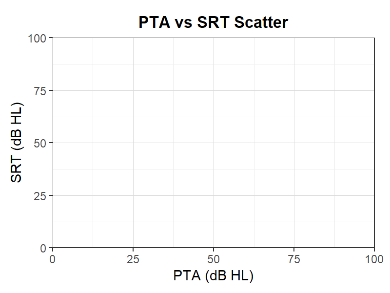
純音-SRT散布図
純音聴力-SRT散布図テンプレート。純音聴力とSRTの相関。
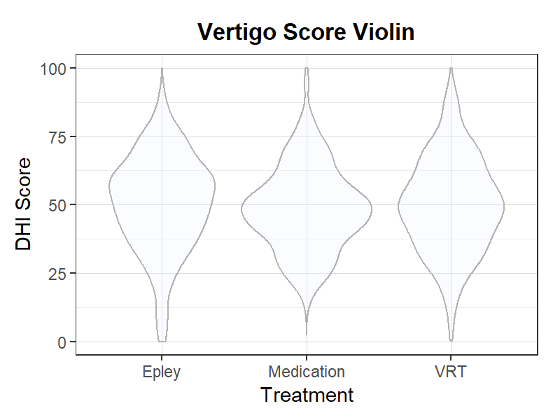
めまいスコアバイオリン
めまいスコアバイオリンプロットテンプレート。めまい治療の効果比較。
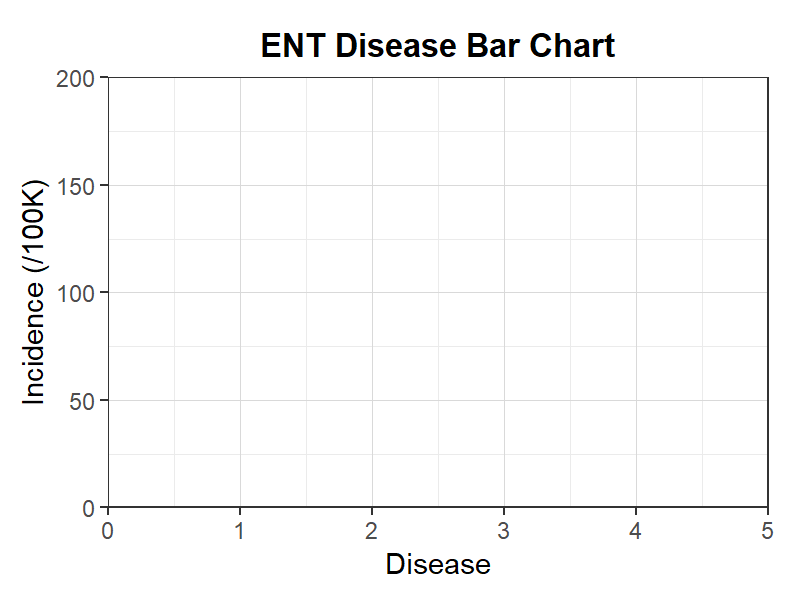
耳鼻疾患棒グラフ
耳鼻疾患棒グラフテンプレート。耳鼻咽喉科疾患の発生率を比較。
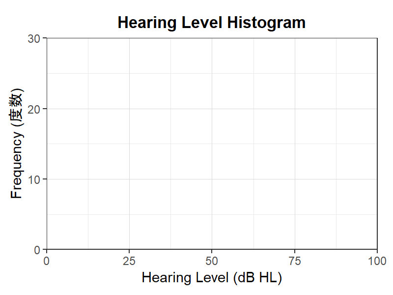
聴力レベルヒストグラム
聴力レベルヒストグラムテンプレート。聴力検査値の度数分布。
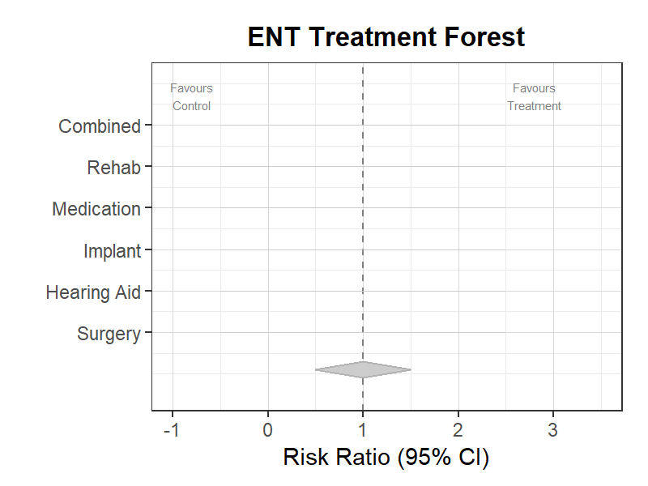
耳鼻治療フォレスト
耳鼻治療フォレストプロットテンプレート。耳鼻治療のメタ分析。
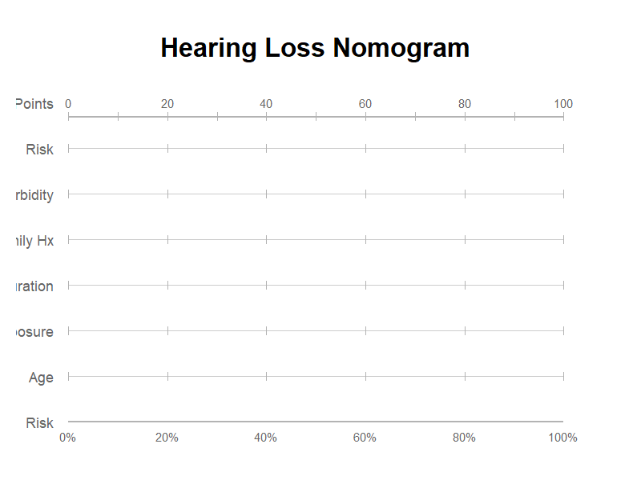
聴力低下ノモグラム
聴力低下ノモグラムテンプレート。聴力予後の予測ツール。
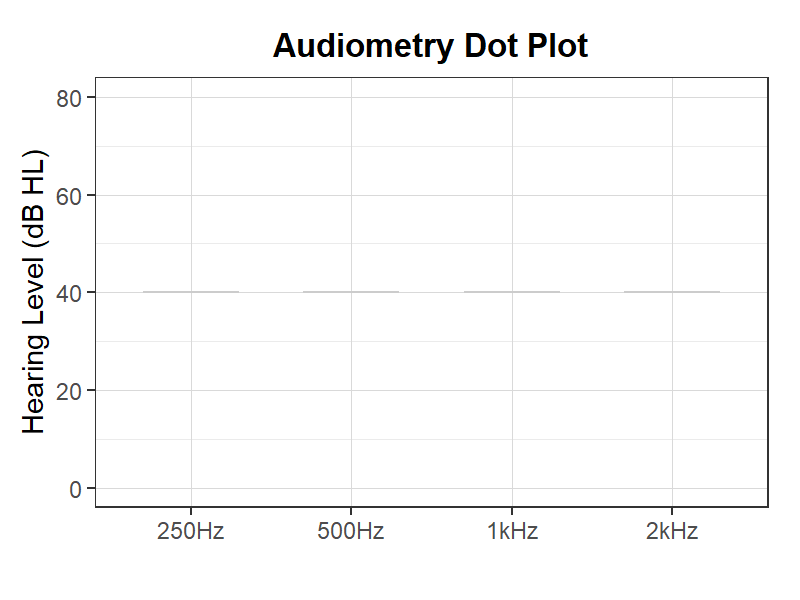
聴力検査ドットプロット
聴力検査ドットプロットテンプレート。各周波数の聴力閾値を比較。
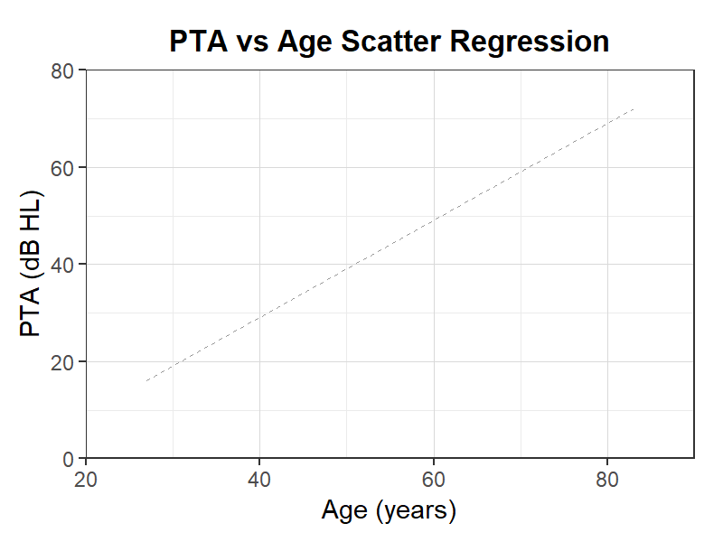
PTA-年齢散布回帰
PTA-年齢散布回帰テンプレート。加齢と聴力の回帰分析。
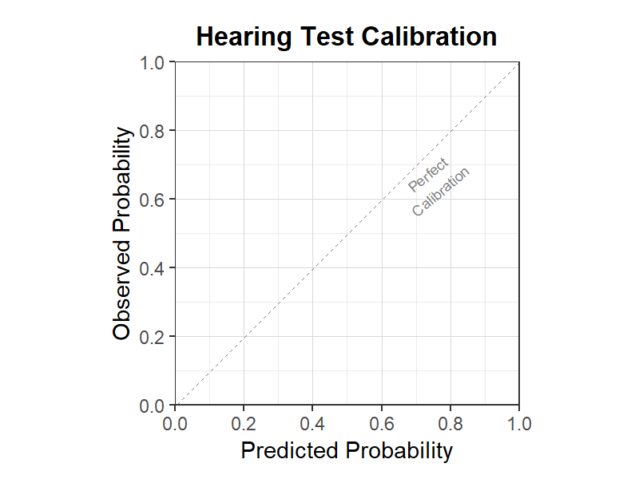
聴力検査較正
聴力検査較正テンプレート。聴力予測モデルの妥当性検証。
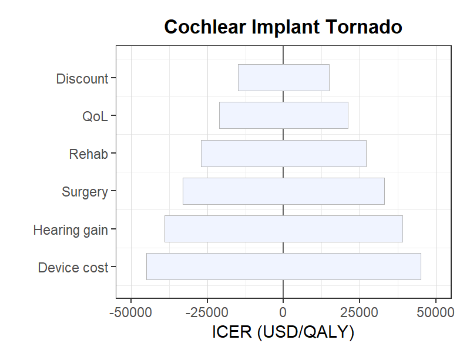
人工内耳費用効果トルネード
人工内耳費用効果トルネード図テンプレート。人工内耳のCEA感度分析。
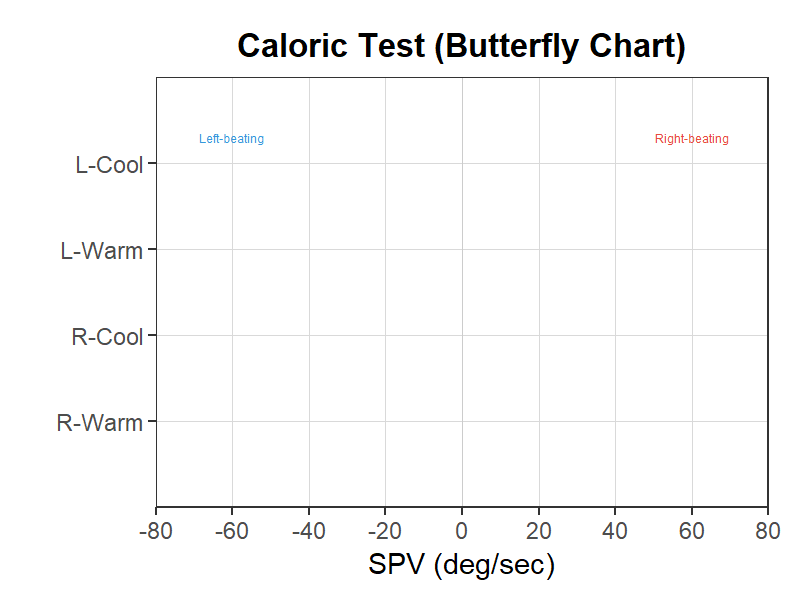
温度刺激検査バタフライチャート
温度刺激検査テンプレート。前庭機能のカロリックテスト結果表示。
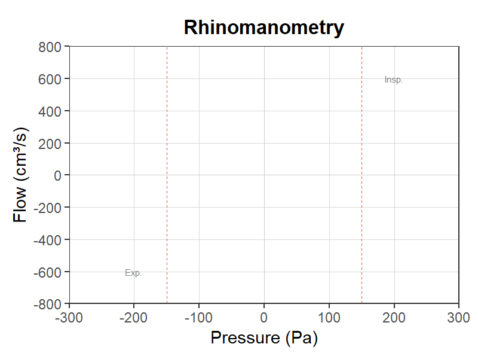
鼻腔通気度検査
鼻腔通気度検査テンプレート。鼻腔抵抗の圧-流量曲線。
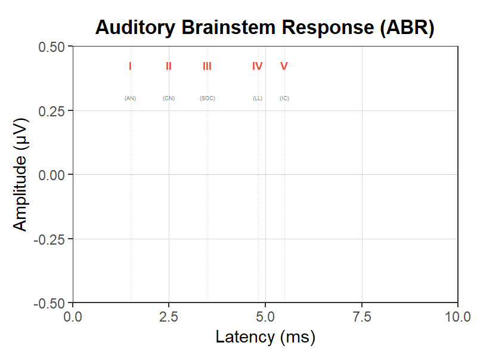
聴性脳幹反応（ABR）
ABRテンプレート。I-V波の潜時と振幅の記録。
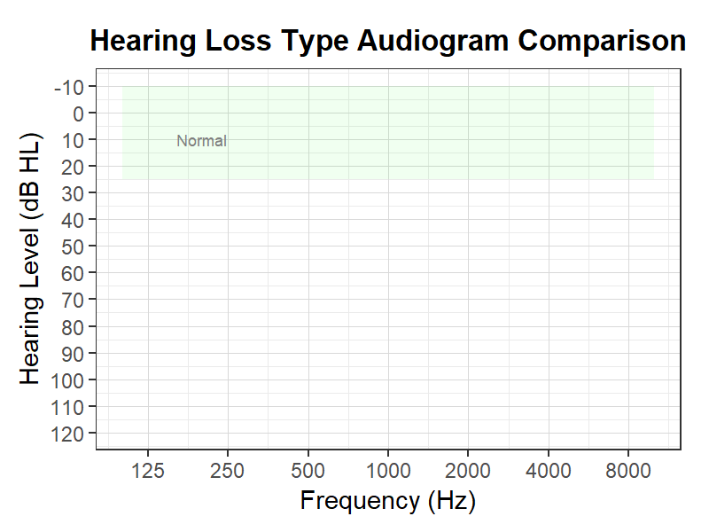
難聴タイプ別オージオグラム比較
難聴タイプ別オージオグラム比較テンプレート。伝音性/感音性/混合性の3パターン。
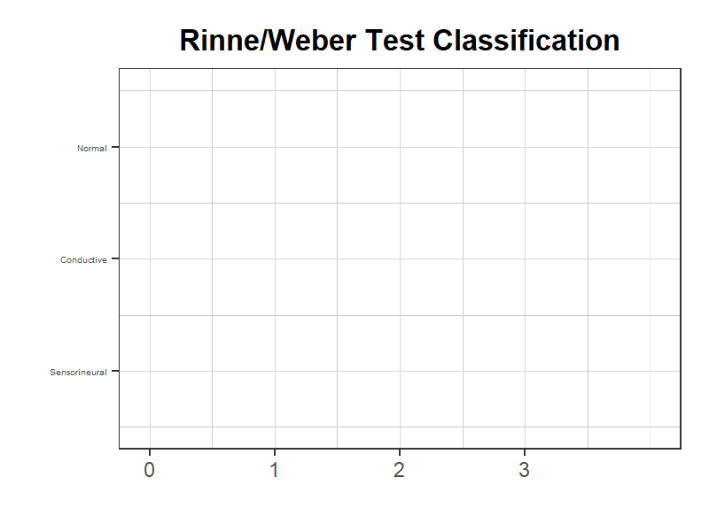
Rinne/Weber試験分類図
Rinne/Weber試験の結果と難聴分類の対応テンプレート。
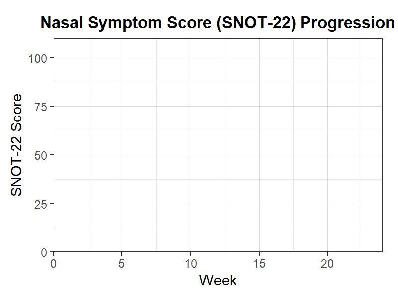
鼻腔症状スコア推移
鼻腔症状スコア推移テンプレート。治療前後のSNOT-22経時変化。
耳鼻咽喉科グラフテンプレートについて
MedGraph Freeの耳鼻咽喉科（ENT）カテゴリでは、25種類の白紙グラフテンプレートを著作権フリー（CC0・パブリックドメイン）で提供しています。医学部の講義レポート、実習レポート、研究発表、ポスター発表、卒業論文などに、ダウンロードしてそのまま利用できます。各テンプレートにはR言語（ggplot2）のコードが付属しており、自分のデータを入力するだけでグラフを再現可能です。Standard・Minimal・Classic・Presentation・Darkの5スタイル、800×600・1200×600・700×700の3サイズ、英語・日本語・テキストなしの3言語から選択できます。